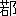

伍子胥は
楚の
人也。
名は
員。
員の
父を
伍奢と
曰ひ、
員の
兄を
伍尚と
曰ふ。
其先を
伍擧と
曰ふ。（
伍擧）
直諫を
以て
楚の
莊王に
事へて、
（一）顯なる
有り、
故に
其後世、
楚に
名あり。
楚の
平王、
太子有り、
名を
建と
曰ふ。
伍奢をして
太傅たらしめ、
費無忌をして
少傅たらしむ。
無忌、
太子建に
忠ならず。
平王、
無忌をして
太子の
爲めに
婦を
秦に
取らしむ。
秦の
女、
好し。
無忌馳せ
歸りて
平王に
報じて
曰く、『
秦の
女絶だ
美なり。
王、
自ら
取りて
更に
太子の
爲めに
婦を
取る
可し』と。
平王遂に
自ら
秦の
女を
取りて、
絶だ
之を
愛幸し、
子軫を
生む。
更に
太子の
爲めに
婦を
取る。
無忌既に
秦の
女を
以て
自ら
平王に
媚び、
因つて
太子を
去りて
平王に
事ふ。一
旦平王卒して
太子立たば
己を
殺さんことを
恐れ、
乃ち
因つて
太子建を
讒す。
建の
母は
蔡の
女也。
平王に
寵なし。
平王稍 益建
益建を
疏んじ、
建をして
城父（
ノ地）を
守り
（二）邊兵に
備へしむ。
之を
頃くして、
無忌、
又、
日夜、
太子の
（三）短を
王に
言つて
曰く、『
太子、
秦の
女の
故を
以て、
（四）怨望無き
※能［＃こと、45-12］はず。
願はくは
王少しく
自ら
備へよ。
太子、
城父に
居りて
兵に
將たりしより、
外、
諸
に
交はり、
且に
入りて
亂を
爲さんと
欲す』と。
平王、
乃ち
其太傅伍奢を
召して、
之を
（五）考問す。
伍奢、
無忌が
太子を
平王に
讒するを
知る。
因つて
曰く、『
王、
獨り
奈何ぞ
（六）讒賊の
小臣を
以て
（七）骨肉の
親を
疏んずる』と。
無忌曰く、『
王、
今（
太子ヲ）
制せずんば、
其事成り、
王且に
（八）禽にせられんとす』と。
是に
於て
平王、
怒つて
伍奢を
囚へて、
（九）城父の
（一〇）司馬奮揚をして
往いて
太子を
殺さしむ。
行きて
未だ
至らず、
奮揚、
人をして
先づ
太子に
告げしむらく、『
太子、
急に
去れ、
然らずんば
將に
誅せられんとす』と。
太子建、
亡げて
宋に
奔る。
無忌、
平王に
言つて
曰く、『
伍奢、二
子あり、
皆賢なり。
誅せずんば
且に
楚の
憂を
爲さんとす。
其父を
以て
（一一）質として
之を
召す
可し、
然らずんば
且に
楚の
患を
爲さんとす』と。
王、
使をして
伍奢に
謂はしめて
曰く、『
能く
汝の二
子を
（一二）致さば
則ち
生きん。
能はずんば
則ち
死せん』と。
伍奢曰く、『
尚の
人と
爲りや
仁、
呼ばば
必ず
來らん。
員の
人と
爲りや
（一三）剛戻にして
（一四）※［＃「言＋句」、U+8A3D、46-11］を
忍び、
能く
大事を
爲す。
彼、
來らば
并せ
禽にせらるるを
見て、
其勢必ず
來らざらん』と。
王聽かず。
人をして二
子を
召さしめて
曰く、『
來らば
吾、
汝の
父を
生かさん。
來らずんば
今、
奢を
殺さん』と。
伍尚、
往かんと
欲す。
員曰く、『
楚の・
我が
兄弟を
召すは、
以て
我が
父を
生かさんと
欲するに
非ず。
脱るる
者有らば
後患を
生ぜんことを
恐るるなり。
故に
父を
以て
質と
爲し、
詐つて二
子を
召すなり。二
子到らば
則ち
父子倶に
死せん。
何ぞ
父の
死に
益せん。
（一五）往かば
讎に
報ずるを
得ざらしめん
耳。
他國に
奔り
力を
借り
以て
父の
恥を
雪ぐに
如かず。
倶に
滅ぶるは
（一六）爲す
無き
也』と。
伍尚曰く、『
我、
往くとも
終に
父の
命を
全うする
※能［＃こと、47-4］はざるを
知る。
然れども
父、
我を
召し
以て
生を
求むるに、
而も
往かず、
後、
恥を
雪ぐ
※能［＃こと、47-4］はずんば
終に・
天下の
笑と
爲らんを
恨む
耳』と。
員に
謂ふ、『
去る
可し。
汝は
能く
父を
殺すの
讎に
報いよ。
我は
將に
死に
歸せんとす』と。
尚、
既に
（一七）執はれに
就く。
使者、
伍胥を
捕へんとす。
伍胥、
弓を
貫り
矢を
執りて
使者に
嚮ふ。
使者、
敢て
進まず。
伍胥、
遂に
亡げ、
太子建の・
宋に
在るを
聞き、
往いて
之に
從ふ。
奢、
子胥の
亡ぐるを
聞くや、
曰く、
（一八）『
楚國の
君臣、
且に
兵に
苦しまんとす』と。
伍尚、
楚に
至る。
楚、
奢と
尚とを
并せ
殺せり。
伍胥既に
宋に
至る。
宋に
（一九）華氏の
亂有り。
乃ち
太子建と
倶に
鄭に
奔る。
鄭人甚だ
之を
（二〇）善くす。
太子建又晉に
適く。
晉の
頃公曰く、『
太子既に
鄭に
善し。
鄭、
太子を
信ず。
太子、
能く
我が
爲めに
（二一）内應せよ。
而して
我其外を
攻めば、
鄭を
滅ぼすや
必せり。
鄭を
滅ぼさば
太子を
封ぜん』と。
太子乃ち
鄭に
還る。
事（二二）未だ
會せず。（
太子建）
會自ら
私に
其從者を
殺さんと
欲す。
從者、
（二三）其謀を
知り、
乃ち
之を
鄭に
告ぐ。
鄭の
定公、
子産と、
太子建を
誅殺す。
建、
子有り、
勝と
名く。
伍胥懼れ、
乃ち
勝と
倶に
呉に
奔る。
（二四）昭關に
到る。
昭關之を
執へんと
欲す。
伍胥、
遂に
勝と
獨身歩走し、
幾んど
脱するを
得ざらんとす。
追ふ
者、
後に
在り。
江に
至る。
江上、一
漁父の・
船に
乘るあり、
伍胥の
急を
知り、
乃ち
伍胥を
渡す。
伍胥、
既に
渡り、
其劒を
解いて
曰く、『
此劒は
直百
金。
以て
（二五）父に
與ふ』と。
父曰く、『
楚國の
法、
（二六）伍胥を
得る
者は、
粟五
萬石・
（二七）爵執珪を
賜ふ。
豈に
徒に百
金の
劒のみならんや』と。
受けず。
伍胥未だ
呉に
至らずして
疾み、
中道に
止り
食を
乞ふ。
呉に
至る。
（二八）呉王僚、
方に
事を
用ひ、
公子光、
將たり。
伍胥乃ち
公子光に
因つて
以て
呉王に
見ゆるを
求む。
之を
久しうして
楚の
平王、
其邊邑の
鍾離、
呉の
邊邑の
卑梁氏と
倶に
（二九）蠶し、
（三〇）兩女子桑を
爭うて
相攻むるを
以て、
乃ち
大に
怒り、
兩國・
兵を
擧げて
相伐つに
至る。
呉、
公子光をして
楚を
伐たしむ。
其鍾離・
（三一）居巣［＃ルビの「きよさう」は底本では「きまさう」］を
拔いて
歸る。
伍子胥、
呉王僚に
説いて
曰く、『
楚は
破る
可き
也。
願はくは
復た
公子光を
遣れ』と。
公子光、
呉王に
謂つて
曰く、『
彼の
伍胥の
父兄、
楚に
戮せらる。
而して
王に
楚を
伐つを
勸むるは、
以て
自ら
其讎を
報いんと
欲する
耳。
楚を
伐つとも
未だ
破る
可からざらん』と。
伍胥、
公子光の・
（三二）内志あり・
王を
殺して
自立せんと
欲し・
未だ
説くに
外事を
以てす
可からざるを
知り、
乃ち
（三三）專諸を
公子光に
進め、
退いて
太子建の
子勝と
與に
野に
耕す。
五
年にして
楚の
平王・
卒す。
初め
平王の・
太子建より
奪ふ
所の
秦の
女、
子軫を
生む。
平王・
卒するに
及んで、
軫、
竟に
立つて
後と
爲れり。
是れを
昭王とす。
呉王僚、
楚の
喪に
因つて、二
公子をして
兵に
將とし
往いて
楚を
襲はしむ。
楚、
兵を
發して
呉の
兵の
後を
絶つ。（
呉ノ兵）
歸るを
得ず。
呉國、
（三四）内空し。
而して
公子光乃ち
專諸をして
呉王僚を
襲ひ
刺さしめて
自立す。
是れを
呉王闔廬となす。
闔廬既に
立つて
志を
得、
乃ち
伍員を
召して
以て
（三五）行人となし、
而して
與に
國事を
謀る。
楚、
其大臣・
郤宛・
伯州犂を
誅す。
伯州犂の
孫伯
、
亡げて
呉に
奔る。
呉、
亦、
を
以て
大夫と
爲す。
前に
王僚の
遣る
所の二
公子の・
兵に
將として
楚を
伐ちし
者、
道絶えて、
歸るを
得ず。
後、
闔廬が
王僚を
弑して
自立せりと
聞き、
遂に
其兵を
以て
楚に
降る。
楚之を
舒に
封ず。
闔廬立つて三
年、
乃ち
師を
興し、
伍胥・
伯と、
楚を
伐つて
舒を
拔き、
遂に
故の
呉の
反せる二
將軍を
禽にす。
因つて
（三六）郢に
至らんと
欲す。
將軍孫武曰く、『
民勞る、
未だ
可ならず。
且く
之を
待て』と。
乃ち
歸る。
四年、
呉、
楚を
伐つて
六と
潛とを
取る。五
年、
越を
伐つて
之を
敗る。六
年、
楚の
昭王、
公子嚢瓦をして
兵を
將ゐて
呉を
伐たしむ。
呉、
伍員をして
迎へ
撃たしめ、
大に
楚の
軍を
豫章に
破り、
楚の
居巣を
取る。九
年、
呉王闔廬、
子胥・
孫武に
謂つて
曰く、『
始め
子、
郢の
未だ
入る
可からざるを
言へり、
今果して
何如』と。二
子對へて
曰く、『
楚の
將嚢瓦貪りて、
（三七）唐・
蔡皆之を
怨む。
王必ず
大に
之を
伐たんと
欲せば、
必ず
先づ
唐・
蔡を
得て
乃ち
可ならん』と。
闔廬之を
聽き、
悉く
師を
興して
唐・
蔡と
與に
楚を
伐つ。
楚と
漢水を
夾んで
陳す。
呉王の
弟夫概、
兵に
將たり、
從はんと
請ふ。
王聽かず。
遂に
（三八）其屬五千
人を
以て、
楚の
將子常を
撃つ。
子常敗走して
鄭に
奔る。
是に
於て、
呉、
勝に
乘じて
前み、
五たび
戰つて
遂に
郢に
至る。
（三九）己卯、
楚の
昭王出奔し、
（四〇）庚辰、
呉王、
郢に
入る。
昭王、
（四一）出亡して
雲夢に
入る。
盜、
王を
撃つ。
王、
に
走る。
（四二）公の
弟懷曰く、『
平王、
我が
父を
殺せり。
我、
其子を
殺すも、
亦可ならずや』と。
公、
其弟の・
王を
殺さんことを
恐れ、
王と
隨に
奔る。
呉の
兵、
隨を
圍む。（
呉 ）
隨人に
謂つて
曰く、
（四三）『（
往昔）
周の
子孫、
漢川に
在りし
者は、
楚、
盡く
之を
滅ぼせり』と。
隨人、
王を
殺さんと
欲す。
王の
子
、
王を
匿し、
（四四）己自ら
王と
爲り、
以て
之に
當らんとす。
隨人、
王を
呉に
與へんことを
卜す。
不吉なり。
乃ち
呉に
（四五）謝し、
王を
與へず。
始め
伍員、
申包胥と
交を
爲す。
員の
亡ぐるや、
包胥に
謂つて
曰く、『
我必ず
楚を
覆さん』と。
包胥曰く、『
我必ず
之を
（四六）存せん』と。
呉の
兵の・
郢に
入るに
及び、
伍子胥、
昭王を
求むれども、
既に
得ず。
即ち
楚の
平王の
墓を
掘いて
其尸を
出し、
之を
鞭つこと三百、
然る
後已む。
申包胥、
山中に
亡げ、
人をして
子胥に
謂はしめて
曰く、『
子の・
讎を
報ずる、
其れ
（四七）以甚だしき
乎。
吾之を
聞く、「
人衆き
者は
天に
勝ち、
天定つて
亦能く
人を
破る」と。
今、
子は
故平王の
臣にして、
親しく
北面して
之に
事へたり。
今、
死人を
（四八）
するに
至る。
此れ
豈に
其れ
（四九）天道の
極なからんや』と。
伍子胥曰く、『
我が
爲めに
申包胥に
（五〇）謝して
曰へ、「
吾、
（五一）日暮れて
塗遠し、
吾故に
（五二）倒行して
之を
逆施するのみ」と。
是に
於て
申包胥、
秦に
走りて
急を
告げ、
救ひを
秦に
求む。
秦、
許さず。
包胥、
秦の
廷に
立つて
晝夜哭し、七
日七
夜、
其聲を
絶たず。
秦の
哀公、
之を
憐んで
曰く、『
楚、
無道なりと
雖も、
臣あること
是の
如し。
存する
無かる
可けんや』と。
乃ち
車五百
乘を
遣り、
楚を
救うて
呉を
撃つ。六
月、
呉の
兵を
稷に
敗る。
會呉王久しく
楚に
留まり
昭王を
求む、
而して
闔廬の
弟夫概、
乃ち
亡げ
歸り、
自立して
王と
爲る。
闔廬、
之を
聞き、
乃ち
楚を
釋てて
歸り、
其弟夫概を
撃つ。
夫概敗走し、
遂に
楚に
奔れり。
楚の
昭王、
呉に
内亂あるを
見、
乃ち
復た
郢に
入り、
夫概を
堂谿に
封じて
堂谿氏と
爲す。
楚、
復た
呉と
戰つて
呉を
敗る。
呉王乃ち
歸る。
後二
歳、
闔廬、
太子夫差をして
兵を
將ゐて
楚を
伐たしめ、
番を
取る。
楚、
呉の
復た
大に
來らんことを
恐れ、
乃ち
郢を
去つて
に
徙る。
是時に
當り、
呉は
伍子胥・
孫武の
謀を
以て、
西は
彊楚を
破り、
北は
齊晉を
威し、
南は
越人を
服す。
其後四年、
孔子、
魯に
相たり。
後五
年、（
呉王）
越を
伐つ。
越王勾踐、
迎へ
撃つて
呉を
姑蘇に
敗り、
闔廬の
指を
傷く。（
呉ノ）
軍卻く。
闔廬、
創を
病みて
將に
死せんとす。
太子夫差に
謂つて
曰く、『
爾、
勾踐が
爾の
父を
殺ししを
忘れんか』と。
夫差對へて
曰く、『
敢て
忘れじ』と。
是夕、
闔廬・
死す。
夫差既に
立つて
王となる。
伯を
以て
太宰となし、
（五三）戰射を
習ふ。二
年の
後、
越を
伐ち、
越を
夫湫に
敗る。
越王勾踐、
乃ち
餘兵五千
人を
以て、
會稽の
上に
棲み、
（五四）大夫種をして
幣を
厚くして
呉の
太宰に
遺り・
以て
和を
請はしめ、
（五五）國を
委して
（五六）臣妾と
爲らんことを
求む。
呉王、
將に
之を
許さんとす。
伍子胥諫めて
曰く、『
越王、
人と
爲り
（五七）辛苦に
能ふ。
今、
王滅ぼさずんば、
後必ず
之を
悔いん』と。
呉王聽かず。
太宰の
計を
用ひて
越と
（五八）平ぐ。
其後五
年にして
呉王、
齊の
景公死して
大臣寵を
爭ひ
新君弱しと
聞き、
乃ち
師を
興して
北のかた
齊を
伐つ。
伍子胥諫めて
曰く、『
勾踐、
食、
（五九）味を
重ねず、
（六〇）死を
弔ひ
病を
問ふ。
且に
之を
用ふる
所有らんと
欲する
也。
此人死せずんば、
必ず
呉の
患を
爲さん。
今、
呉の・
越あるは、
猶ほ
人の・
腹心の
疾有るがごとき
也。
而るに
王、
越を
先にせずして、
乃ち
齊を
務む。
亦謬らずや』と。
呉王聽かず、
齊を
伐ち、
大に
齊の
師を
艾陵に
敗り、
遂に
（六一）鄒・
魯の
君を
滅ぼして
以て
歸る。
益子胥の
謀を
疏んず。
其後四年、
呉王將に
北のかた
齊を
伐たんとす。
越王勾踐、
子貢の
謀を
用ひ、
乃ち
其衆を
率ゐて
以て
呉を
助け、
而して
重寶以て
太宰に
獻遺す。
太宰既に
數越の
（六二）賂を
受け、
其の
越を
愛信すること
殊に
甚しく、
日夜爲めに
呉王に
言ふ。
呉王信じて
の
計を
用ふ。
伍子胥諫めて
曰く、『
夫れ
越は
（六三）腹心の
病なり。
今、
其浮辭詐僞を
信じて
齊を
貪る。
齊を
破るは、
譬へば
猶ほ
石田のごとく、
之を
用ふる
所無し。
且つ
（六四）盤庚の
誥に
曰く、
（六五）「
顛越不恭あらば、
之を
（六六） 殄［＃ルビの「ぎてん」は底本では「さてん」］滅
殄［＃ルビの「ぎてん」は底本では「さてん」］滅し、
遺育［＃「遺育」の左に「ノコリソダツ」のルビ］する
無からしめよ。
種を
茲の
邑に
易へしむる
無かれ」と。
此れ
（六七）商の
興る
所以なり。
願はくは
王、
齊を
釋てて
越を
先にせよ。
若し
然らずんば、
後、
將に
之を
悔ゆとも
及ぶ
無からんとす』と。
而るに
呉王聽かず、
子胥を
齊に
使はす。
子胥、
行くに
臨み、
其子に
謂つて
曰く、『
吾數王を
諫む。
王、
用ひず。
吾、
今、
呉の
亡ぶるを
見ん。
汝、
呉と
倶に
亡ぶるは、
益無き
也』と。
乃ち
其子を
齊の
（六八）鮑牧に
屬［＃「屬」の左に「タノム」のルビ］して、
還つて
呉に
（六九）報ず。
呉の
太宰、
既に
子胥と
隙有り。
因つて
讒して
曰く、『
子胥、
人と
爲り、
剛暴にして
恩少く、
（七〇）猜賊なり。
其怨望、
恐らくは
深禍を
爲さん。
前日、
王、
齊を
伐たんと
欲す。
子胥、
以て
不可と
爲す。
王卒に
之を
伐つて
大功ありき。
子胥、
其計謀の
用ひられざりしを
恥ぢ、
乃ち
反つて
怨望す。
而して
今、
王、
又復た
齊を
伐つ。
子胥專ら
愎り
彊ひて
諫め
（七一）事を
用ふるを
沮毀す。
徒に
呉の
敗れて
以て
自ら
其計謀に
勝たんことを
（七二）幸ふのみ。
今、
王自ら
行き、
國中の
武力を
悉して
以て
齊を
伐つ。
而して
子胥諫め
用ひられず、
因つて
輟め
謝し
（七三）佯病して
行かず。
王、
備へざる
可からず。
此れ
禍を
起すこと
難からじ。
且つ
、
人をして
微に
之を
伺はしむるに、
其の
齊に
使するや、
乃ち
其子を
齊の
鮑氏に
屬せり。
夫れ
人臣と
爲つて、
内、
意を
得ず、
外、
諸に
倚り、
自ら
以て
先王の
謀臣と
爲すに、
今用ひられず、
常に
（七四）鞅鞅として
怨望す。
願はくは
王、
早く
（七五）之を
圖れ』と、
呉王曰く、『
子の
言微きも、
吾も
亦之を
疑へり』と。
乃ち
使をして
伍子胥に
（七六）屬鏤の
劍を
賜はしめて
曰く、『
子、
此を
以て
死せよ』と。
伍子胥、
天を
仰いで
歎じて
曰く、『
嗟乎、
讒臣、
亂を
爲す。
王、
乃ち
反つて
我を
誅す。
我、
若の
父をして
霸たらしむ。
若が
未だ
立たざる
時より、
諸公子立つを
爭ふ。
我、
死を
以て
之を
先王に
爭ふ。
幾んと
立つを
得ざらんとせり。
若、
既に
立つを
得るや、
呉國を
分つて
我に
與へんと
欲せり。
我、
顧つて
敢て
望まざりき。
然るに
今、
若、
諛臣の
言を
聽き、
以て
長者を
殺す』と。
乃ち
其（七七）舍人に
告げて
曰く、『
必ず
我が
墓上に
樹うるに
（七八）梓を
以てせよ、
以て
（七九）器を
爲る
可からしめん。
而して
吾が
眼を
抉り、
呉の
東門の
上に
懸けよ。
以て
越の
寇の
入つて
呉を
滅ぼすを
觀ん』と。
乃ち
自剄して
死す。
呉王之を
聞いて
大に
怒り、
乃ち
子胥の
尸を
取り、
盛るに
（八〇）鴟夷の
革を
以てし、
之を
江中に
（八一）浮ぶ。
呉人、
之を
憐み、
爲めに
祠を
江上（
ノ山）に
立つ、
因つて（
其山ヲ）
命けて
胥山と
曰ふ。
呉王、
既に
伍子胥を
誅し、
遂に
齊を
伐つ。
齊の
鮑氏、
其君悼公を
殺して
陽生を
立つ。
呉王、
其賊を
討たんと
欲す、
勝たずして
去る。
其後二
年、
呉王、
魯・
衞の
君を
召し、
之を
 ※［＃「皐」の「白」に代えて「自」、U+81EF、56-7］
※［＃「皐」の「白」に代えて「自」、U+81EF、56-7］に
會す。
其明年、
因つて
北、
大に
諸を
黄池に
會し、
（八二）以て
周室に
令す。
越王勾踐、
襲うて
（八三）呉の
太子を
殺し、
呉の
兵を
破る。
呉王之を
聞き、
乃ち
歸り、
使を
使はし
幣を
厚うして
越と
平ぐ。
後九
年、
越王勾踐、
遂に
呉を
滅ぼして
王夫差を
殺し、
而して
太宰を
誅す。
其君に
不忠にして、
外、
（八四）重賂を
受け、
（八五）己と
比周せるを
以て
也。
伍子胥の
初め
與に
倶に
亡ぐる
所の
故の
楚の
太子建の
子勝といふ
者、
呉に
在り。
呉王夫差の
時、
楚の
惠王、
勝を
召して
楚に
歸さんと
欲す。
葉公諫めて
曰く『
勝は
勇を
好んで
陰に
死士を
求む。
殆ど
（八六）私有らんか』と。
惠王聽かず。
遂に
勝を
召して
楚の
邊邑
に
居らしめ、
號して
白公と
爲す。
白公、
楚に
歸つて三
年にして、
呉、
子胥を
誅す。
白公勝、
既に
楚に
歸り、
鄭の
其父を
殺ししを
怨み、
乃ち
陰に
死士を
養ひ、
鄭に
報ゆるを
求む。
楚に
歸つて五
年、
鄭を
伐たんと
請ふ。
楚の
（八七）令尹子西、
之を
許す。
兵未だ
發せざるに、
晉、
鄭を
伐つ。
鄭、
救ひを
楚に
請ふ。
楚、
子西をして
往いて
救はしむ。（
子西、鄭ト）
與に
盟つて
還る。
白公勝怒つて
曰く、
（八八）『
鄭は
之れ
仇に
非ず、
乃ち
子西なり』と。
勝自ら
劍を
礪ぐ。
人問うて
曰く、『
何をか
以て
爲す』と。
勝曰く、『
以て
子西を
殺さんと
欲す』と。
子西、
之を
聞き、
笑つて
曰く
（八九）『
勝は
卵の
如き
耳、
何をか
能く
爲さんや』と。
其後四
歳、
白公勝、
石乞と
與に
襲うて
楚の
令尹子西・
司馬子を
朝に
殺す。
石乞曰く、『
王を
殺さずんば
不可なり』と。
乃ち
之を
劫す。
王、
（九〇）高府に
如く。
（九一）石乞の
從者屈固、
楚の
惠王を
負ひ、
亡げて
昭夫人の
宮に
走る。
葉公、
白公の・
亂を
爲すを
聞き、
其國人を
率ゐて
白公を
攻む。
白公の
徒敗れ、
亡げて
山中に
走り、
自殺す。
而して
石乞を
虜にして、
白公の
（九二）尸處を
問ふ。
言はず。
將に
烹んとす。
石乞曰く、『
事成らば
卿と
爲らん。
成らずして
烹らるるは、
固より
（九三）其職也』と。
終に
肯て
其尸處を
告げず。
遂に
石乞を
烹る。
而して
惠王を
求めて
復た
之を
立つ。
太史公曰く、
怨毒の・
人に
於ける、
甚しいかな、
（九四）王者尚ほ
之を
臣下に
行ふ
※能［＃こと、58-7］はず、
況や
同列をや。
向に
伍子胥をして
奢に
從ひ
倶に
死せしめば、
何ぞ
（九五）螻蟻に
異ならんや。
（九六）小義を
棄てて
大恥を
雪ぎ、
名を
後世に
垂る。
（九七）悲しい
夫。
子胥が
（九八）江上に
窘められ・
道に
食を
乞ふに
方り、
志、
豈に
嘗て
須臾も
郢を
忘れんや。
故に
（九九）隱忍して
功名を
就せり。
（一〇〇）烈丈夫に
非ずんば、
孰れか
能く
此を
致さん。
（一〇一）白公如し
自立して
君と
爲らざりせば、
其功謀亦道ふに
勝ふ
可からざる
者ありしならんかな。
【一】顯なる有り。世に名を著はせるをいふ。
【二】邊兵。國境の兵。
【三】短。缺點。
【四】怨望。うらむ。
【五】考問。拷問に同じ。
【六】讒賊の小臣。費無忌をさす。
【七】骨肉の親。太子を指す。
【八】禽。擒に同じ。
【九】城父。地名。
【一〇】司馬奮揚。司馬は官名、奮揚は名。
【一一】質。人質。
【一二】致す。呼び寄せる也。
【一三】剛戻。剛情にして人に戻るをいふ。
【一四】※［＃「言＋句」、U+8A3D、46-註【一四】］。恥辱。詬と同じ。
【一五】太子已に出亡せり、故に員、楚王が過を悔ゆる意無く必ず其父を殺さんことを知る也。
【一六】爲す無きなり。何の用もなき事也。
【一七】執。捕縛。
【一八】楚國の君臣は、ゆくゆく兵難に苦しむことと爲るべし。
【一九】華氏の亂。宋世家を參照せよ。
【二〇】善くす。好遇する也。
【二一】内應。内部より裏切りするをいふ。
【二二】未だ會せず。未だ機會を得ざる也。
【二三】其謀。内應の謀也。
【二四】昭關。關所の名、下の昭關は其關守。
【二五】父。漁父を指す。
【二六】此に至りて始めて漁父が伍胥を識るを見はす。
【二七】爵執珪。爵位の名。
【二八】按ずるに原文の「事」の字は衍文なるべく、當に「呉王僚、方に公子光を用ひて將と爲す」と讀むべからん。下文の「呉王」は即ち僚をさすなり。
【二九】蠶。養蠶。
【三〇】兩女子。兩邑の女子。
【三一】居巣。楚の邑の名。
【三二】内志。國内に事を擧げんとする志也。
【三三】專諸。勇士の名。
【三四】内空し。國内に兵が居らぬ也。
【三五】
行人。諸
の國への使する官也。
【三六】郢。楚の都。
【三七】唐・蔡。楚に屬する二國の名。
【三八】其屬。夫概の私屬。
【三九】己卯。己卯の日。
【四〇】庚辰。庚辰の日、即ち己卯の翌日。
【四一】出亡。出奔也。雲夢。澤の名。
【四二】公。の令。
【四三】呉は姫姓にして、周と同姓なり、故に此を以て楚の罪を數むる也。
【四四】王子
、楚王の身代りと爲りて殺されん※
［＃こと、51-註【四四】］を望めり。
【四五】謝。謝絶する也。
【四六】存。保存する也。
【四七】以甚。以は已と通ず、太だ也。
【四八】
。辱むる也。
【四九】天道の循環の極即ち天定まり人を破る時無からんや。
【五〇】謝。答禮。
【五一】年老いて爲すべき事多きに喩ふ。
【五二】理に順うて行ふに遑あらざるを云ふ。
【五三】戰射を習ふ。兵士をして戰射を練習せしむ。
【五四】大夫種。大夫は位、種は名、其姓は文と曰ふ。幣を厚くす。鄭重なる贈物を贈る也。
【五五】國を委す。自國を差出すをいふ。
【五六】臣妾。越王は呉の臣となり、越王の夫人は呉の婢妾となるをいふ。
【五七】能は耐ふる也。辛苦艱難に耐へ忍ぶ也。
【五八】平。媾和する也。
【五九】一菜にて食するを云ふ。
【六〇】死を弔ひ病を問ふ。死者には祭祀料などを與へて之を弔慰し、病者には醫藥などを與へて之を見舞ふ。
【六一】此句甚だ疑ふべし、恐らくは誤あらん。
【六二】賂。賄賂。
【六三】腹心の病。深く臟腑を犯したる病也。
【六四】盤庚の誥。書經の盤庚の篇。
【六五】顛越。狂顛僭越。是非を顛倒し、法度を越ゆる也。
【六六】輕きは鼻を割く刑に處し重きは之を殺し盡して、生き殘らしむること無く、其不良の種を此土地に移して良民に傳染せしむること無かれ。
【六七】商。殷なり。
【六八】鮑牧。當に鮑氏に作るべし。鮑牧は此時已に死せり。
【六九】報。復命なり。
【七〇】猜賊。猜忌にして人を害ふ也。
【七一】事を用ふる者、即ち太宰
の計を沮みそしる也。
【七二】幸。僥倖を希望する也。
【七三】佯病。僞つて病と稱する也。
【七四】鞅鞅。怏怏と同じ。楽まざる貌。
【七五】之を殺せの意。
【七六】屬鏤。劍の名。
【七七】舍人。家臣を云ふ。
【七八】梓。あづさ。棺材なり、國亡び王死せば、必ず用ふる所あり。
【七九】器。棺をいふ。
【八〇】鴟夷の革。馬革の嚢。
【八一】浮。投げ込みしをいふ。
【八二】
以て周室に令す。原文「以令周室」は「令以周室」の倒置にして、「令するに周室を以てす」と讀むべきならん。呉、中國に霸たらんと欲し、周の天子の命令を以て諸
に告ぐる也。
【八三】呉の太子。名は友。
【八四】重賂。重き賄賂。
【八五】己と比周。越の賂を受けて越王と徒黨を組むを云ふ。
【八六】私。陰謀也。
【八七】令尹。楚の官名、宰相也。
【八八】鄭は云云。今我が讎は鄭に非ず、乃ち子西なりとの意。左傳に云はく、鄭人、此に在り、讎遠からずと。其意略ぼ同じ。
【八九】勝は云云。勝は卵の如きものに過ぎず。何事をか仕出かすことを得んやとの意。此言、左傳に記する所と異なり。左傳には、「子西曰く、勝は卵の如し、翼けて之を長ぜり」とあり、是れ蓋し其の勝に恩あるを恃む也。
【九〇】高府。地名。
【九一】石乞の從者。徐廣曰く、一に「惠王の從者」に作ると。從ふべし。屈固。※［＃「くさかんむり／遠」、U+85B3、58-註【九一】］固の誤、即ち箴尹固なり。左傳哀公十八年に見ゆ。
【九二】尸處。死骸の在所。
【九三】其職なり。其本分なり。當然の事なりとの意。
【九四】王たる者が其臣下に對してすら怨心毒心を起させてはならぬ。
【九五】螻蟻。けら、あり、などの小蟲。言ふに足らざるをいふ。
【九六】小義を棄つ。父を質として召したれども行かざりしをいふ。大恥を雪ぐ。遂に父の讎を報いしをいふ。
【九七】伍胥の志の悲むべきをいふ。
【九八】江上に窘めらる。伍胥が歩走して江に至り、幾ど追ふ者に獲られんとせしをいふ。
【九九】堪へ難き艱苦を押し忍びて、遂に功名を成就せり。
【一〇〇】烈丈夫。義烈の男子。
【一〇一】白公も亦父の仇の報ぜられざるに因りて、怒りて子西を殺せり。壯烈の志氣無きにあらず。若し王を劫して自立せざりしならば、其功業謀略亦甚だ盛んなるもの有りしならん。白公が自立して君と爲りしを深く惜む也。
伍子胥者。楚人也。名員。員父曰
二伍奢
一。員兄曰
二伍尚
一。其先曰
二伍擧
一。以
二直諫
一事
二楚莊王
一。有
レ顯。故其後世有
レ名
レ於
レ楚。楚平王有
二太子
一名曰
レ建。使
三伍奢爲
二太傅
一。費無忌爲
二少傅
一。無忌不
レ忠
レ於
二太子建
一。平王使
下無忌爲
二太子
一取
中婦於
上レ秦。秦女好。無忌馳歸報
二平王
一曰。秦女絶美。王可
下自取而更爲
二太子
一取
上レ婦。平王遂自取
二秦女
一。而絶愛
二幸之
一。生
二子軫
一。更爲
二太子
一取
レ婦。無忌既以
二秦女
一自媚
レ於
二平王
一。因去
二太子
一而事
二平王
一。恐
二一旦平王卒。而太子立殺
一レ己。乃因讒
二太子建
一。建母蔡女也。無
レ寵
レ於
二平王
一。平王稍益疏
レ建。使
下建守
二城父
一。備
中邊兵
上。頃
レ之。無忌又日夜言
二太子短於
一レ王曰。太子以
二秦女之故
一。不
レ能
レ無
二怨望
一。願王少自備也。自
下太子居
二城父
一將
上レ兵。外交
二諸
一。且欲
二入爲
一レ亂矣。平王乃召
二其太傅伍奢
一考
二問之
一。伍奢知
四無忌讒
三太子於
二平王
一。因曰。王獨奈何以
二讒賊小臣
一。疏
二骨肉之親
一乎。無忌曰。王今不
レ制。其事成矣。王且
レ見
レ禽。於
レ是平王怒囚
二伍奢
一。而使
三城父司馬奮揚往殺
二太子
一。行未
レ至。奮揚使
三人先告
二太子
一。太子急去。不
レ然將
レ誅。太子建亡奔
レ宋。無忌言
レ於
二平王
一曰。伍奢有
二二子
一皆賢。不
レ誅。且
レ爲
二楚憂
一。可
下以
二其父
一質而召
上レ之。不
レ然。且
レ爲
二楚患
一。王使
三使謂
二伍奢
一。曰。能致
二汝二子
一則生。不
レ能則死。伍奢曰。尚爲
レ人。仁。呼必來。員爲
レ人。剛戻忍
レ※
［＃「言＋句」、U+8A3D、14-1］。能成
二大事
一。彼見
二來之并禽
一。其勢必不
レ來。王不
レ聽。使
三人召
二二子
一。曰。來吾生
二汝父
一。不
レ來今殺
レ奢也。伍尚欲
レ往。員曰。楚之召
二我兄弟
一。非
レ欲
三以生
二我父
一也。恐
下有
二脱者
一後生
上レ患。故以
レ父爲
レ質。詐召
二二子
一。二子到。則父子倶死。何益
二父之死
一。往而令
二讎不
一レ得
レ報耳。不
レ如
下奔
二他國
一。借
レ力以雪
中父之恥
上。倶滅。無
レ爲也。伍尚曰。我知
二往終不
一レ能
レ全
二父命
一。然恨
三父召
レ我以求
レ生。而不
レ往。後不
レ能
レ雪
レ恥。終爲
二天下笑
一耳。謂
レ員可
レ去矣。汝能報
二殺
レ父之讎
一。我將
レ歸
レ死。尚既就
レ執。使者捕
二伍胥
一。伍胥貫
レ弓執
レ矢嚮
二使者
一。使者不
二敢進
一。伍胥遂亡。聞
二太子建之在
一レ宋。往從
レ之。奢聞
二子胥之亡
一也。曰。楚國君臣且
レ苦
レ兵矣。伍尚至
レ楚。楚并
二殺奢與
一レ尚也。伍胥既至
レ宋。宋有
二華氏之亂
一。乃與
二太子建
一倶奔
レ於
レ鄭。鄭人甚善
レ之。太子建又適
レ晉。晉頃公曰。太子既善
レ鄭。鄭信
二太子
一。太子能爲
レ我内應。而我攻
二其外
一。滅
レ鄭必矣。滅
レ鄭而封
二太子
一。太子乃還
レ鄭。事未
レ會。會自私欲
レ殺
二其從者
一。從者知
二其謀
一。乃告
二之於
一レ鄭。鄭定公與
二子産
一誅
二殺太子建
一。建有
レ子名
レ勝。伍胥懼。乃與
レ勝倶奔
レ呉。到
二昭關
一。昭關欲
レ執
レ之。伍胥遂與
レ勝獨身歩走。幾不
レ得
レ脱。追者在
レ後。至
レ江。江上有
二一漁父乘
一レ船。知
二伍胥之急
一。乃渡
二伍胥
一。伍胥既渡。解
二其劒
一曰。此劒直百金。以與
レ父。父曰。楚國之法。得
二伍胥
一者。賜
二粟五萬石爵執珪
一。豈徒百金劒邪。不
レ受。伍胥未
レ至
レ呉而疾。止
二中道
一乞食。至
レ於
レ呉。呉王僚方用
二事公子光
一爲
レ將。伍胥乃因
二公子光
一以求
レ見
二呉王
一。久
レ之。楚平王以
下其邊邑鍾離與
二呉邊邑卑梁氏
一倶蠶。兩女子爭
レ桑相攻
上。乃大怒。至
レ於
二兩國擧
レ兵相伐
一。呉使
二公子光伐
一レ楚。拔
二其鍾離居巣
一而歸。伍子胥説
二呉王僚
一曰。楚可
レ破也。願復遣
二公子光
一。公子光謂
二呉王
一曰。彼伍胥父兄爲
レ戮
レ於
レ楚。而勸
二王伐
一レ楚者。欲
三以自報
二其讎
一耳。伐
レ楚。未
レ可
レ破也。伍胥知
下公子光有
二内志
一。欲
二殺
レ王而自立
一。未
上レ可
三説以
二外事
一。乃進
三專諸於
二公子光
一。退而與
二太子建之子勝
一耕
レ於
レ野。五年而楚平王卒。初平王所
レ奪
二太子建
一秦女。生
二子軫
一。及
二平王卒
一。軫竟立爲
レ後。是爲
二昭王
一。呉王僚因
二楚喪
一。使
二二公子將
レ兵往襲
一レ楚。楚發
レ兵絶
二呉兵之後
一。不
レ得
レ歸。呉國内空。而公子光乃令
三專諸襲
二刺呉王僚
一而自立。是爲
二呉王闔廬
一。闔廬既立得
レ志。乃召
二伍員
一以爲
二行人
一。而與謀
二國事
一。楚誅
二其大臣郤宛。伯州犂
一。伯州犂之孫伯
亡奔
レ呉。呉亦以
レ爲
二大夫
一。前王僚所
レ遣二公子將
レ兵伐
レ楚者。道絶不
レ得
レ歸。後聞
下闔廬弑
二王僚
一自立
上。遂以
二其兵
一降
レ楚。楚封
二之於
一レ舒。闔廬立三年。乃興
レ師與
二伍胥伯
一伐
レ楚拔
レ舒。遂禽
二故呉反二將軍
一。因欲
レ至
レ郢。將軍孫武曰。民勞未
レ可。且待
レ之。乃歸。四年。呉伐
レ楚取
二六與
一レ潛。五年。伐
レ越敗
レ之。六年。楚昭王使
二公子嚢瓦將
レ兵伐
一レ呉。呉使
二伍員迎撃
一。大破
三楚軍於
二豫章
一。取
二楚之居巣
一。九年。呉王闔廬謂
二子胥孫武
一曰。始子言
二郢未
一レ可
レ入。今果何如。二子對曰。楚將嚢瓦貪。而唐蔡皆怨
レ之。王必欲
二大伐
一レ之。必先得
二唐蔡
一。乃可。闔廬聽
レ之。悉興
レ師與
二唐蔡
一伐
レ楚。與
レ楚夾
二漢水
一而陳。呉王之弟夫概將
レ兵請
レ從。王不
レ聽。遂以
二其屬五千人
一撃
二楚將子常
一。子常敗走奔
レ鄭。於
レ是呉乘
レ勝而前。五戰。遂至
レ郢。己卯。楚昭王出奔。庚辰。呉王入
レ郢。昭王出亡。入
二雲夢
一。盜撃
レ王。王走
レ。公弟懷曰。平王殺
二我父
一。我殺
二其子
一。不
二亦可
一乎。公恐
二其弟殺
一レ王。與
レ王奔
レ隨。呉兵圍
レ隨。謂
二隨人
一曰。周之子孫在
二漢川
一者。楚盡滅
レ之。隨人欲
レ殺
レ王。王子
匿
レ王。己自爲
レ王以當
レ之。隨人卜
レ與
二王於
一レ呉。不吉。乃謝
レ呉。不
レ與
レ王。始五員與
二申包胥
一爲
レ交。員之亡也。謂
二包胥
一曰。我必覆
レ楚。包胥曰。我必存
レ之。及
二呉兵入
一レ郢。伍子胥求
二昭王
一。既不
レ得。乃掘
二楚平王墓
一。出
二其尸
一。鞭
レ之三百。然後已。申包胥亡
レ於
二山中
一。使
三人謂
二子胥
一曰。子之報
レ讎。其以甚乎。吾聞
レ之。人衆者勝
レ天。天定亦能破
レ人。今子故平王之臣。親北面而事
レ之。今至
レ於
レ二死人
一。此豈其無
二天道之極
一乎。伍子胥曰。爲
レ我謝
二申包胥
一曰。吾日暮塗遠。吾故倒行而逆
二施之
一。於
レ是申包胥走
レ秦告
レ急。求
二救於
一レ秦。秦不
レ許。包胥立
レ於
二秦廷
一。晝夜哭。七日七夜。不
レ絶
二其聲
一。秦哀公憐
レ之曰。楚雖
二無道
一。有
レ臣若
レ是。可
レ無
レ存乎。乃遣
二車五百乘
一。救
レ楚撃
レ呉。六月。敗
二呉兵於
一レ稷。會呉王久留
レ楚求
二昭王
一。而闔廬弟夫概乃亡歸。自立爲
レ王。闔廬聞
レ之。乃釋
レ楚而歸。撃
二其弟夫概
一。夫概敗走。遂奔
レ楚。楚昭王見
三呉有
二内亂
一。乃復入
レ郢。封
三夫概於
二堂谿
一。爲
二堂谿氏
一。楚復與
レ呉戰敗
レ呉。呉王乃歸。後二歳。闔廬使
二太子夫差將
レ兵伐
一レ楚取
レ番。楚懼
二呉復大來
一。乃去
レ郢徙
レ於
レ。當
二是時
一。呉以
二伍子胥孫武之謀
一。西破
二彊楚
一。北威
二齊晉
一。南服
二越人
一。其後四年。孔子相
レ魯。後五年。伐
レ越。越王勾踐迎撃。敗
三呉於
二姑蘇
一。傷
二闔廬指
一。呉軍卻。闔廬病
レ創將
レ死。謂
二太子夫差
一曰。爾忘
三勾踐殺
二爾父
一乎。夫差對曰。不
二敢忘
一。是夕闔廬死。夫差既立爲
レ王。以
二伯
一爲
二太宰
一。習
二戰射
一。二年後伐
レ越。敗
三越於
二夫湫
一。越王勾踐乃以
二餘兵五千人
一。棲
レ於
二會稽之上
一。使
下大夫種厚
レ幣遺
二呉太宰
一。以請
上レ和。求
三委
レ國爲
二臣妾
一。呉王將
レ許
レ之。伍子胥諫曰。越王爲
レ人。能
二辛苦
一。今王不
レ滅。後必悔
レ之。呉王不
レ聽。用
二太宰
計
一。與
レ越平。其後五年。而呉王聞
二齊景公死。而大臣爭
レ寵。新君弱
一。乃興
レ師北伐
レ齊。伍子胥諫曰。勾踐食不
レ重
レ味。弔
レ死問
レ疾。且欲
レ有
レ所
レ用
レ之也。此人不
レ死。必爲
二呉患
一。今呉之有
レ越。猶
三人之有
二腹心疾
一也。而王不
レ先
レ越而乃務
レ齊。不
二亦謬
一乎。呉王不
レ聽。伐
レ齊大敗
三齊師於
二艾陵
一。遂滅
二鄒魯之君
一以歸。益疏
二子胥之謀
一。其後四年。呉王將
二北伐
一レ齊。越王勾踐用
二子貢之謀
一。乃率
二其衆
一以助
レ呉。而重寶以獻
二遺太宰
一。太宰
既數受
二越賂
一。其愛
二信越
一殊甚。日夜爲言
レ於
二呉王
一。呉王信
二用
之計
一。伍子胥諫曰。夫越腹心之病。今信
二其浮辭詐僞
一而貪
レ齊。破
レ齊譬猶
二石田
一。無
レ所
レ用
レ之。且盤庚之誥曰。有
二顛越不恭
一。
二殄滅之
一。俾
レ無
二遺育
一。無
レ使
レ易
三種于
二茲邑
一。此商之所
レ以
レ興。願王釋
レ齊而先
レ越。若不
レ然。後將
二悔
レ之無
一レ及。而呉王不
レ聽。使
二子胥於
一レ齊。子胥臨
レ行。謂
二其子
一曰。吾數諫
レ王。王不
レ用。吾今見
二呉之亡
一矣。汝與
レ呉倶亡。無
レ益也。乃屬
三其子於
二齊鮑牧
一。而還報
レ呉。呉太宰
既與
二子胥
一有
レ隙。因讒曰。子胥爲
レ人。剛暴少
レ恩猜賊。其怨望。恐爲
二深禍
一也。前日王欲
レ伐
レ齊。子胥以爲
二不可
一。王卒伐
レ之而有
二大功
一。子胥恥
二其計謀不
一レ用。乃反怨望。而今王又復伐
レ齊。子胥專愎彊諫。沮
二毀用
一レ事。徒幸
三呉之敗。以自勝
二其計謀
一耳。今王自行。悉
二國中武力
一以伐
レ齊。而子胥諫不
レ用。因輟謝佯病不
レ行。王不
レ可
レ不
レ備。此起
レ禍不
レ難。且
使
二人微伺
一レ之。其使
レ於
レ齊也。乃屬
三其子於
二齊之鮑氏
一。夫爲
二人臣
一。内不
レ得
レ意。外倚
二諸
一。自以爲
二先王之謀臣
一。今不
レ見
レ用。常鞅鞅怨望。願王早圖
レ之。呉王曰。微
二子之言
一。吾亦疑
レ之。乃使
三使賜
二伍子胥屬鏤之劍
一曰。子以
レ此死。伍子胥仰
レ天歎曰。嗟乎。讒臣
爲
レ亂矣。王乃反誅
レ我。我令
二若父霸
一。自
二若未
レ立時
一。諸公子爭
レ立。我以
レ死爭
三之於
二先王
一。幾不
レ得
レ立。若既得
レ立。欲
下分
二呉國
一與
上レ我。我顧不
二敢望
一也。然今若聽
二諛臣言
一以殺
二長者
一。乃告
二其舍人
一曰。必樹
二吾墓上
一以
レ梓。令
レ可
二以爲
一レ器。而抉
二吾眼
一。縣
二呉東門之上
一。以觀
二越寇之入滅
一レ呉也。乃自剄死。呉王聞
レ之。大怒。乃取
二子胥尸
一。盛以
二鴟夷革
一。浮
二之江中
一。呉人憐
レ之。爲立
三祠於
二江上
一。因命曰
二胥山
一。呉王既誅
二伍子胥
一。遂伐
レ齊。齊鮑氏殺
二其君悼公
一而立
二陽生
一。呉王欲
レ討
二其賊
一。不
レ勝而去。其後二年。呉王召
二魯衞之君
一。會
二之
※
［＃「皐」の「白」に代えて「自」、U+81EF、17-14］一。其明年。因北大會
三諸
於
二黄池
一。以令
二周室
一。越王勾踐襲
二殺呉太子
一。破
二呉兵
一。呉王聞
レ之。乃歸。使
二使厚
一レ幣與
レ越平。後九年。越王勾踐遂滅
レ呉。殺
二王夫差
一。而誅
二太宰
一。以
下不
三忠於
二其君
一。而外受
二重賂
一。與
レ己比周
上也。伍子胥初所
二與倶亡
一故楚太子建之子勝者。在
レ於
レ呉。呉王夫差之時。楚惠王欲
二召
レ勝歸
一レ楚。葉公諫曰。勝好
レ勇而陰求
二死士
一。殆有
レ私乎。惠王不
レ聽。遂召
レ勝。使
レ居
二楚之邊邑
一。號爲
二白公
一。白公歸
レ楚三年。而呉誅
二子胥
一。白公勝既歸
レ楚。怨
三鄭之殺
二其父
一。乃陰養
二死士
一求
レ報
レ鄭。歸
レ楚五年。請
レ伐
レ鄭。楚令尹子西許
レ之。兵未
レ發。而晉伐
レ鄭。鄭請
二救於
一レ楚。楚使
二子西往救
一。與盟而還。白公勝怒曰。非
二鄭之仇
一。乃子西也。勝自礪
レ劍。人問曰。何以爲。勝曰。欲
三以殺
二子西
一。子西聞
レ之。笑曰。勝如
レ卵耳。何能爲也。其後四歳。白公勝與
二石乞
一襲殺
二楚令尹子西。司馬子
於
一レ朝。石乞曰。不
レ殺
レ王。不可。乃劫
レ之。王如
二高府
一。石乞從者屈固。負
二楚惠王
一。亡走
二昭夫人之宮
一。葉公聞
二白公爲
一レ亂。率
二其國人
一攻
二白公
一。白公之徒敗。亡走
二山中
一自殺。而虜
二石乞
一。而問
二白公尸處
一。不
レ言將
レ烹。石乞曰。事成爲
レ卿。不
レ成而烹。固其職也。終不
レ肯
レ告
二其尸處
一。遂烹
二石乞
一。而求
二惠王
一復立
レ之。
太史公曰。怨毒之於
レ人。甚矣哉。王者尚不
レ能
レ行
三之於
二臣下
一。況同列乎。向令
二伍子胥從
レ奢倶死
一。何異
二螻蟻
一。棄
二小義
一雪
二大恥
一。名垂
二於後世
一。悲夫。方
下子胥窘
レ於
二江上
一。道乞
上レ食。志豈甞須臾忘
レ郢邪。故隱忍就
二功名
一。非
二烈丈夫
一孰能致
レ此哉。白公如不
二自立爲
一レ君者。其功謀亦不
レ可
レ勝
レ道者哉。